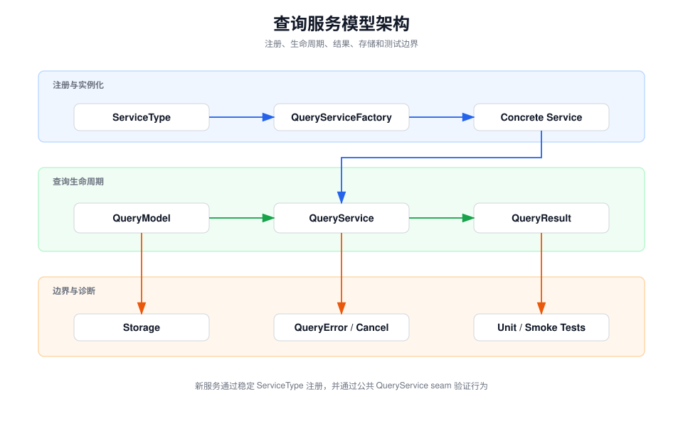

查询服务模型目录概览
本目录定义翻译服务的公共生命周期、注册表、结果模型、使用状态和 TTS 类型，是各服务实现与窗口、存储及测试之间的稳定边界。
职责边界：
QueryService 组织查询预处理、取消、异步结果和错误回填；
QueryServiceFactory 把稳定的服务标识映射到具体服务类；
QueryResult 保存翻译、词典、HTML 和错误状态。

关键组件
-
QueryServiceFactory是服务发现入口。新增翻译器必须使用 唯一ServiceType并在映射表中注册。 -
QueryService负责统一语言检查、查询类型、取消句柄、 流式与非流式调用，以及把异常转换为QueryError。 -
QueryResult是 UI 观察到的结果容器；服务只应通过公开 字段写入翻译结果、原始数据和错误。 -
ServiceUsageStatus与TTSServiceType描述跨服务的策略值，不承载网络请求。 -
Storage子目录保存窗口级服务顺序、启用状态和查询统计。
失败与调试入口
-
服务未出现时，先检查
QueryServiceFactory.serviceTypeMappings和 Xcode Sources build phase。 -
请求未执行时，检查
prehandleQueryText的语言、配额和 query-type 分支。 -
取消或错误显示异常时，检查服务保存的 stop closure、
QueryError转换和QueryResult.error。 -
单元测试应从公开的
translate/startQueryseam 验证行为；真实网络只用于独立 smoke 检查。